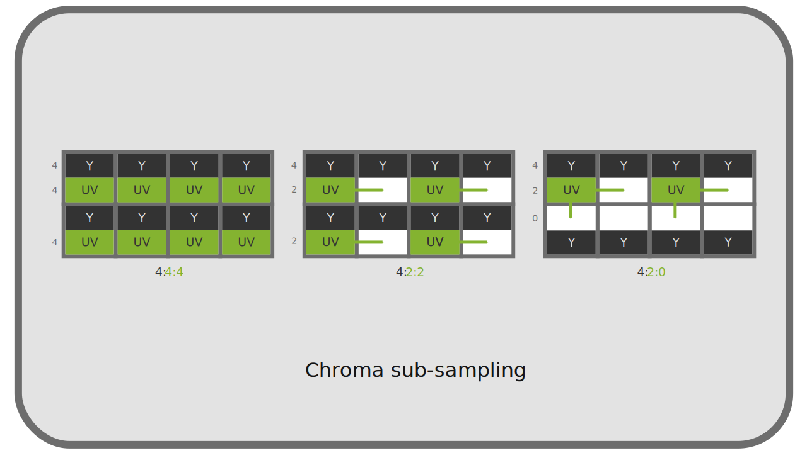
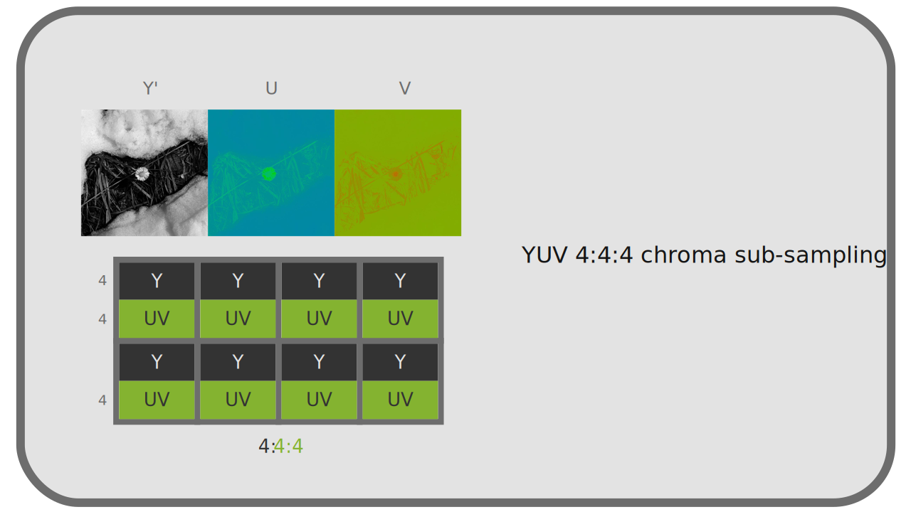
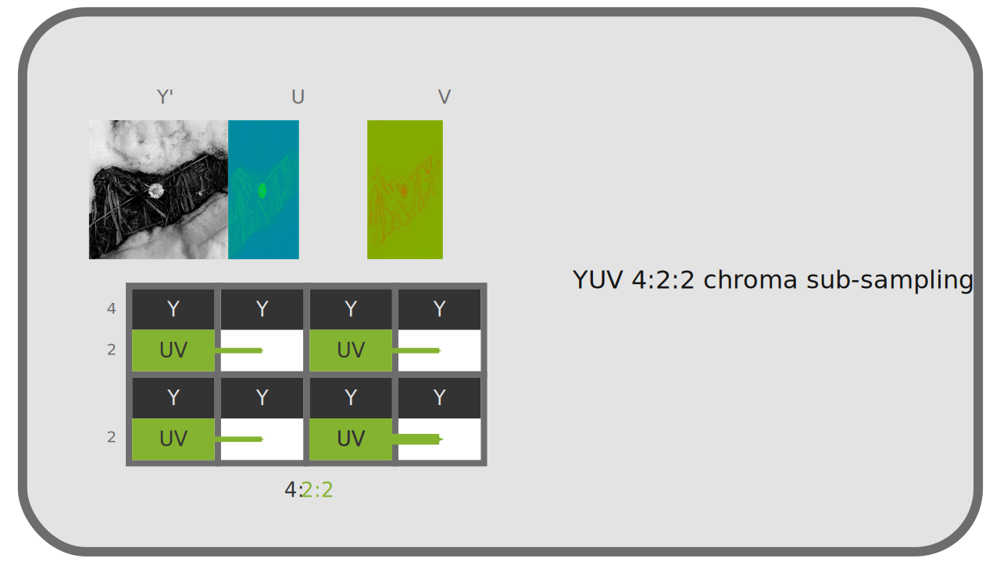

I.K - Pixel format¶
Color spaces define how colors should be reproduced, and what specific colors should be generated, but they do not define how those colors are recorded by the computer. It is the pixel format used that will define what types of values are recorded, and how. This format is completely independent of the color spaces, but will influence the quality of the image and the amount of shading that can be stored.
Each pixel is composed of different values of colors, they are the channels*, which are in general (but not necessarily) either red, green and blue (it is the RGB), or a luminance* and two chrominances* (it is the YUV)
In the case of YUV, there is sometimes chrominance subsampling, which reduces the amount of data to be stored with a minimal (and almost indiscernible) loss of quality.
Finally, for each channel, you can choose the range and precision of the recorded values. f
K.1 - RGB or YUV¶
Any visible color can be represented by only two complementary* colors and primary* colors. As soon as three primaries are defined and fixed, by varying their proportions, one can obtain a wider range (a gamut*) of visible colors, a useful (and sufficient) surface of visible colors. Thus, the majority of the devices of reproduction of the colors (screens, projectors…) use three primary colors.
These colors are mostly reds, greens, and blues; they may vary depending on the device and the color space* they use but are always within this range.
In any case, all the color coding systems use a group of different values corresponding to precise primaries or properties; we speak of channels*, generally three in number.
K.1.a - RGB¶
A numerical division of the information of colors is generally used based on the same primary* Red, Green and Blue as the devices of reproduction. Red, Green and Blue are the three channels R, G, B of this system.

There are several reasons for the use of these primaries and this system of color representation:
- The choice of red, green and blue is close to what the receptor cells perceive best naturally
- Red and blue are the extremes of the visible spectrum, and green is halfway between the two: it is the choice that easily allows to have the widest gamut in the set of visible colors. -These colors are naturally the most used by the display devices although in theory it would be possible to choose others.
But historically, and for reasons of performance and storage, another system is very widespread: YUV.
K.1.b - YUV¶

In the first uses of an electrical signal (analog, not digital at first) to represent videos, the signal was a “simple” one-dimensional signal: videos were represented only in a range from black to white through grays, in black and white. In other words, one stored and reproduced only the information of luminous intensity, of luminance*.
Then came the color televisions, but it was necessary to keep the compatibility of the signal with the oldest black and white televisions; the information of colors, of chrominance was therefore added to the luminance signal 1 , without touching the original signal; the old black and white televisions simply ignored this additional information.
The system used is not a RGB system but of three channels YUV2, where Y represents the luminance, and UV represent two information of chrominance (containing respectively the ratio blue/green and red/green).

What is interesting about this system is not only historical: as we have seen previously, the human eye distinguishes better the contrasts of luminance* than of chrominance. Separating this information makes it possible to treat them differently, and in particular to reserve a quantity of information, a resolution, higher in the luminance than the chrominance, and thus to reduce the quantity of information to be stored and transmitted without notable loss of visible quality.
K.1.c - Comparison¶
We have two main systems of color coding, independent of color spaces used 3.
Here are the main differences:
- History: the use of RGB spread with the digital age, YUV dates from the analog
- Consequently YUV is more widespread in video formats, RGB in image formats.
- YUV allows a more efficient data compression, with a certain loss in chrominance, while RGB* must store as much information in its three channels.
- The conversion from YUV to RGB, and vice versa, is done easily and almost without loss of information.
K.1.d - Others¶
There are other less common combinations of channels and pixel formats, for specific uses or containers*.
For example, some image formats use a palette of colors instead of several mixed primaries, and thus have only one channel per pixel, whose value corresponds to a predefined color4.
Other formats store only grayscale, and thus just one channel of brightness. There are also more exotic formats with two layers…
K.2 - YUV 4:4:4, 4:2:2, 4:2:0… Chrominance subsampling¶
YUV has the advantage, compared to RGB, to be able to function in practice in a way closer to the human perception which is more powerful in luminosity*. Indeed, by separating the luminance* from the chrominance*, it is possible to decrease the quantity of data recorded in chrominance to support the luminance, without losing the perceived visual quality and thus to compress the video data effectively.
To operate this reduction of quality in chrominance, we simply decrease the resolution, the number of pixels; it is what we call chroma sub-sampling.
Chroma subsampling is therefore a lossy compression method that is completely independent of the standard* (codec*) encoding of the video.
The acronyms 4:4:4, 4:2:2, 4:2:05… describe how the subsampling is done and indicate the amount of data lost. This description is made from a 4 by 2 pixel grid.

The first value of the trio represents the resolution (sampling) of the luminance*.
The second value represents the subsampling of the chrominance* on the first line (all odd lines), while the third represents this subsampling on the second line (all even lines).
A fourth value is sometimes added to the acronym and represents in this case a subsampling in the alpha* channel of the video 6.
We can easily calculate the amount of data saved by adding the three values and dividing by 12 (or 16 if there is a separate value for alpha).
For example:
- in 4:4:4, there is no loss (factor of
1.0) - in 4:2:2, one third is gained (factor of
0.66) - in 4:2:0, we gain half (factor of
0.5)
Tip
In the case of black and white video, chrominance is completely useless, so you can choose the mode that has the least chrominance.
K.2.a - 4:4:4¶

The 4:4:4 subsampling in YUV is the only equivalent to RGB in terms of quality (and quantity of data). There is in fact no subsampling in this mode and all pixels contain chrominance* and luminance* information.
It is not used in broadcasting but only in production (or for archiving). Indeed, the bitrate would be too high, but this data is essential for post-production, especially when using green or blue background (chroma-key): since masking is done on the chrominance information, it is absolutely essential to have the full resolution.
Warning
Unfortunately, only high-end professional cameras and recorders can record in 4:4:4, many cameras record in 4:2:2, only in 4:2:0 for the entry level.
K.2.b - 4:2:2¶

In 4:2:2, the resolution of the chrominance* is half that of the luminance (so the amount of data is reduced by one third). The loss is imperceptible, which makes it a very efficient way of compressing video. This mode is used in production (as long as there is no overlay, green/blue background), in high-end formats and in high quality broadcasting (especially in television).
The horizontal resolution of the chrominance is reduced by half while the vertical resolution is kept.
K.2.c - 4:2:0¶
In 4:2:0, the chrominance* resolution is reduced by half on every other line, and completely removed on the other line. The amount of data is thus reduced by half overall, but the difference is still very difficult to perceive, which makes it a very good broadcast format7.
This mode is the main one in consumer computer files and on the internet. Many software players, and most hardware players (blu-rays players, smart TVs, etc) only support 4:2:0.
It is to be proscribed in production in case of colorimetric correction or overlay; the chrominance information is very insufficient (a “staircase” effect can easily appear, due to the lack of resolution in chrominance).
Both the horizontal and vertical resolution of the chrominance are reduced by half.
K.3 - Color depth (bpc)¶
Regardless of the chosen color space, and whether for exported files or the working space, the color depth parameter describes the accuracy of the values recorded for each channel* of pixels.
Contrary to a widespread idea, the depth of color does not really influence the quantity of visible colors, but rather the precision of the calculations, and thus the number of “sub-shades” usable within the chosen colorimetric space. In other words, the depth does not change the gamut*. We will speak here rather about quantity of shades rather than quantity of colors to avoid this confusion.
By defining the precision of the values, and the amount of data recorded, the color depth directly influences the size of the files.
This is usually measured in bits* (meaning per pixel) or in bpc (bits per channel). The more bits (0 or 1) you use to store the pixel (or each of the channels), the more space the file will take up but the higher the accuracy (and therefore the quality).
Depending on the system, the standards vary, especially because of the YUV chrominance subsampling.
K.3.a - In RGB¶
In RGB each channel* contains as much information (there is no subsampling), and if in theory one could imagine an arbitrary number of bits* to store the channels (and it is the case in certain file formats), one generally uses multiples of 8 (and thus integer bytes8)
K.3.a.a 8 bpc / 24 bits / 24 bpp / 32 bits with alpha¶
Most images use 8 bits per channel. With 8 bits, we can code 28, that is 256, different values (from 0 to 255). With three layers, we therefore have a total of 83, that is, a little over 16 million, different values for a pixel.
This quantity of nuances is necessary and sufficient so that the human eye does not distinguish “levels” in the images with a gamut* like that of the sRGB, and is thus the most widespread in the digital images RGB intended for the computer screens.
But this quantity is not sufficient when working on the image, as a workspace. Indeed, when modifying the images, the computer performs calculations on the values of the different layers, and these calculations on only 256 integer values lead to a strong loss of precision, visible very quickly9.
This depth is also not sufficient for TV or film work that uses a higher depth (associated with a wider gamut in spaces other than sRGB).
To be able to work without degrading the image, we therefore increase the color depth of the workspace.
K.3.a.b 16 bpc / 48 bits / 48 bpp / 64 bits with alpha¶
By adding a byte for each layer, we greatly increase the number of available shades. In effect, we increase the number of values available for each layer to 216, or 65536. This makes a total of 655363, or several trillion, shades per pixel.
As a general rule, these 16 bits per layer provide the necessary precision for fine work on the image, but may still be insufficient in specific cases:
- When using a linear workspace for an export intended for high-end TV and HDR or cinema (cf. chapter L - Transfer curves): the transition from linear* to non-linear output space (the application of a gamma*) “compresses” the dark values and “stretches” the lights. As a result of this calculation, 16 bpc linear corresponds in quality to just 12 bpc of the highest standards for television10 and cinema11.
- In case of complex and heavy work, even on a non-linear space, for television or cinema, it’s possible to reach the limit of precision necessary for very fine color gradations.
We can therefore further increase the depth of color in these cases.
K.3.a.c 32 bpc / 96 bits / 96 bpp / 128 bits with alpha¶
Warning
Do not confuse 32 bpc (per channel) with 32 bits or 32 bpp (per pixel) which is actually only 8 bpc (with an alpha layer)!
We add a third byte per channel, which further increases exponentially the number of available shades, with 232, 4 billion, possible values per channel*, that is to say a number that we will consider infinite shades per pixel.
This mode is the one which allows a work virtually without any loss on the image, whatever the colorimetric space used, whether it is linear or not, but becomes very heavy in term of memory.
While it can be useful as a working mode, it is in fact rarely used for storing files (even intermediate ones) where 16 bits per layer are often enough 12.
K.3.b - In YUV¶
In YUV, which is never used as a working system but only for storage and diffusion, the depth used is different from RGB systems.
It’s usually noted in the number of bits used for the luminance layer per pixel; indeed the number of bits* per channel* doesn’t really make sense with the different sub-samples of chrominance* possible, as well as a number of bits per pixel
By taking into account the subsampling of chrominance, we can calculate the average number of bits used per byte (and therefore the approximate size of an image without compression by multiplying by the number of pixels), even if in reality, the number of bits used by chrominance is the one indicated for pixels containing chrominance, and zero for the rest.
The various modes thus differ only in term of quality, and as a general rule, the more we increase the resolution of the image and the gamut* of the color space, the more we increase the depth to ensure that the gradations remain fine and without effect of staircase (“banding” )
K.3.b.a 8 bits¶
This is the most common depth in computing; most computer monitors can’t display more than this.
- In 4:4:4, this means that each pixel is represented by 24 bits.
- In 4:2:2, this means that a pixel is represented on average by 16 bits, with actually half of the pixels (every other column) containing 24 bits (8 bits per channel), and the other half containing 8 bits (8 bits of luminance and none of chrominance).
- In 4:2:0, this means that a pixel is represented on average by 12 bits, with actually every fourth pixel (every second row and every second column) containing 24 bits (8 bits per channel), and the last quarter containing 8 bits (8 bits of luminance and none of chrominance).
This is the standard depth for HD video in Rec.709.
K.3.b.b 10 bits¶
This is the basic depth of high-end and UHD videos in Rec.2020.
- In 4:4:4, this means that each pixel is represented by 30 bits.
- In 4:2:2, this means that a pixel is represented on average by 20 bits, with actually half of the pixels (every other column) containing 30 bits (10 bits per layer), and the other half containing 10 bits (10 bits of luminance and none of chrominance).
- In 4:2:0, this means that a pixel is represented on average by 15 bits, with every fourth pixel (every second row and every second column) actually containing 30 bits (10 bits per layer), and the last quarter, 10 bits (10 bits of luminance and none of chrominance).
K.3.b.c 12 bits¶
This is the “HDR” depth of high-end video and UHD in Rec.2020.
- In 4:4:4, this means that each pixel is represented by 36 bits.
- In 4:2:2, this means that a pixel is represented on average by 24 bits, with actually half of the pixels (every other column) containing 36 bits (12 bits per layer), and the other half containing 12 bits (12 bits of luminance and none of chrominance).
- In 4:2:0, this means that a pixel is represented on average by 18 bits, with every fourth pixel (every second row and every second column) actually containing 18 bits (12 bits per layer), and the last quarter, 12 bits (12 bits of luminance and none of chrominance).
K.3.c - Others¶
There are other depths, from 1 bit per pixel (monochrome images), depending on specific uses. For example, an image using a palette of 256 colors as found in the GIF format or some PNG for example use 8 bits per pixel (and therefore per channel too, since there is only one channel in this case)
K.4 - Full range / Limited / TV / PC ?¶
When encoding video (and decoding it), an important parameter is the color range. This parameter has its historical origin at the time of the passage from analog TV to digital RGB screens. It gives a range of possible levels on each of the channels* of color (red, green, blue).
K.4.a - Full range / PC¶
Digital computer monitors use the full range of red, green and blue levels for color reproduction. With the 8 bits* per channel* most common, this means that each channel stores values between 0 and 255.
0 represents black, and 255 represents white.
K.4.b - Limited range / TV¶
Televisions are expected to use the range known as limited of the levels; this range is originally adapted specifically to represent more correctly the contrasts of the films and corresponds with 8 bits* by channel* to values between 16 and 235.
This means that in television, the value 16 represents black, and the value 235 represents white. All values below 16 are ignored (more black than black) as well as all values above 235 (more white than white) 13.
K.4.c - Practical conclusion¶
It is therefore necessary to know both your material when reproducing a video, and what to do when encoding it.
K.4.c.a - Encoding¶
In the vast majority of cases, video standards recommend encoding in limited range / TV: videos are intended to be seen in television conditions (including on the Internet). This is the case for example for mp4 in h.264 or h.265, for mkv, and for all broadcast formats.
On the other hand, image formats (PNG, Jpeg, openEXR, etc.), as well as intermediate video formats (those used during production and not broadcasting, such as Prores), being intended for a computer environment, use rather the full range / PC.
It is important to respect these standards to be sure that the files are correctly interpreted by the viewers’ equipment, and always inquire about the formats recommended by the broadcasters.
K.4.c.b - Playback and display¶
When playing videos, it is also necessary that the whole system is correctly configured; a common (not to say recurrent) problem on computers is that videos are left in limited range while the screen is full range.
During playback, the video source must be converted to match the screen or projector. Without conversion, a limited range video on a full range screen will be “dull”: there will be no black or white, the range of the image going only from light to dark gray. Conversely, a full range video on a limited range TV will have a loss of information in both highlights and shadows, with large parts completely black or white (the image will be too contrasted).
So the hardware must be set up correctly. On a disc player or console, there must be a setting to specify whether the connected display is full range or limited range (as a general rule, a computer monitor or video projector is full range, a TV limited range).
On a computer, things can be a bit more complex: you have to start by checking the settings of the graphics card driver, usually in a section called “video”, and specify full range / PC (unless it is a TV that is connected to the computer)14. If after having set this parameter variations are still visible, you have to check that the software used to play the video does not make a bad conversion (for example Quicktime on Windows was known for this15); most of these softwares should however let the graphics card do this conversion and not cause any problem (this is the case of VLC, of the video player of Windows, of Totem under Linux…).

Example of parameters via the settings of a Nvidia graphics card (under Linux). Note especially here the color range parameter, to be set to Full if the screen is a computer screen, and Limited if it is a TV.
Warning
On some hardware, an “Auto” option is available in addition to full / limited range. In this case the hardware try to detect the type of screen connected. Since this is a parameter that should only be changed when the screen is changed, it is strongly recommended to set it manually.
Sources & References
- Sous-chantillonage de la chrominance sur Wikipedia
- Color Depth sur Wikipedia (en anglais)
- RGB Full vs Limited sur Reference Home Theater (en anglais)
-
In reality, we speak of either luminance(ZZ-vocabulaire.md) or luminosity(ZZ-vocabulaire.md) or luma* :
- The luminance has a linear transfer curve.
- The luma/luminosity/brightness has a gamma.
When we speak of luminance we note YUV while when we speak of brightness we should note Y’UV, but most of the time we omit the premium.
See chapter L - Transfer curves, linear space and gamma*. ↩ -
The general term YUV actually covers two families, each declined in luminance or luminosity (Y or Y’):
- In analog we speak of YUV and Y’UV, or sometimes YPbPr and Y’PbPr.
- In digital the exact term is YCbCr or Y’CbCr, and sometimes YCC.
But it is generally the term YUV that is used in all these different cases… ↩ -
In fact, YUV and RGB can be used interchangeably, but some standards and color spaces specify one or the other, or both. For example sRGB is specifically intended to be used on RGB encoding, while Rec.709 specifies that it can be used in both RGB and YUV. ↩
-
This is the case for GIF which contains a maximum of 256 different colors in its palette. This principle can also be used for PNG and other formats. The aim here is to reduce the overall size of the file by storing less information (only the palette with the colors described in RGB, and only one channel per pixel; this way we can reduce the overall size by a factor of three). ↩
-
This list are the most common subsamples, but there are rarer ones (4:2:1, 4:1:1), or more complex or downright exotic ones (3:1.5:1.5, 3:1:1)… ↩
-
By default, the subsampling of the alpha channel is the same as that of the luminance*. ↩
-
This mode exists in the openEXR format: it is the option noted “Luminance/Chroma”. ↩
-
In current computing where the byte* is also the Byte*, the smallest unit of memory, one cannot use “half bytes” (or any other fraction). Using an integer number of bytes per pixel means that the number of pixels in the image can be completely arbitrary; if the number of bytes per pixel is not integer, several pixels will have to share bytes, and the number of pixels is constrained: the total number of bytes in the image must be integer. This is why the number of rows and columns in a mp4 video must be even for example. ↩
-
It is easy to see why: let’s imagine that we have to divide a value of
127by two. The result will be rounded to63or64. If other calculations follow, the precision drops very quickly and so does the quality. ↩ -
In 2021, the standard for Ultra-High Definition (4K) Rec.2020, still little used in broadcasting but already standardized, which has a very wide gamut, recommends 12 bits in luminance for its “HDR” mode. ↩
-
The Digital Cinema Package (DCP) (where the image is in fact encoded under the JPEG 2000 lossless standard) in use in 2021 encodes the colors in a XYZ space with 12 bpc. ↩
-
We won’t go into the technical details of how these values are represented, either by a float number (between 0.0 and 1.0 and potentially negative too) or by an integer, but it is important to know that this distinction exists as much for the 16 bpc as for the 32 bpc. When in doubt, prefer floating point numbers. ↩
-
Some blu-rays and game consoles take advantage of this limit to add speculars (brightness) beyond the white and make them brighter. If the TV is compatible, it will display “super whites”, otherwise it will simply ignore this information, without affecting the image. ↩
-
For a long time, NVidia graphics card drivers under Windows were configured to display videos in limited range by default… ↩
-
Although loved by animators for its ability to easily play videos frame by frame, Quicktime under Windows is to be avoided for its poor color management; its development has been abandoned by Apple anyway.
DJV, available for Windows, Mac OS, Linux, as well as BSD, replaces it efficiently and integrates a professional color management. ↩